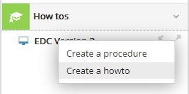
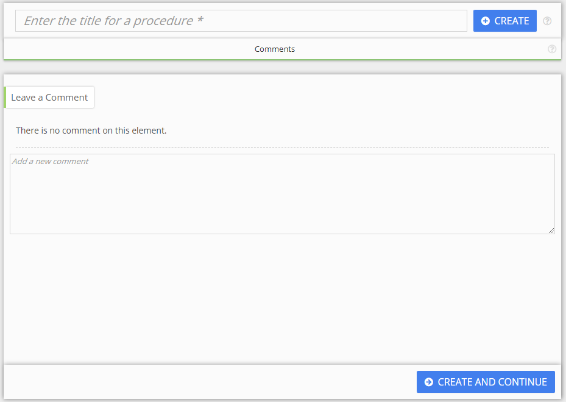

Créer le document
Pour créer un document, se rendre dans Documentation Types.
Chaque type de document possède deux niveaux : le chapitre et le document. La terminologie de ces deux niveaux changent pour chaque type, mais le principe reste le même :
| Document type | Chapter | Document |
| How-tos | Procedure | How-to |
| Concepts | Theme | Concept |
| Training | Course | Unit |
| Q&A | Category | Question |
| Glossary | Theme | Term |
| Release Notes | N/A | Notes |
Pour créer un document à la racine de l'arborescence, cliquer sur le bouton droit au niveau de la racine et sélectionner Create an [item].

Vous pouvez également créer un document sous un chapitre pour structurer votre contenu.
Le panneau suivant s'affiche :

La fenêtre est identique pour la création des chapitres et documents.